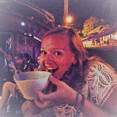

Become one of my friends and subscribe
How does the site work?
As I really like my friends and family I have classified certain recipes under their names.
- A Jack ~ Easy does it! Ready in a heartbeat
- A Bar ~ Tiny dishes aka Starters
- A Fee ~ Mains with twist
- A Bee ~ Complex dishes but o so worth it
- An Ash ~ For all my vegan friends out there
- A Mama ~ Classic Comfort Food
As these are my closest friends, thank god they share my food frenzy with me

My Inspiration
As long as I can remember food has been an important part of my life. My mother is a great cook and always trying out new things. Me and my brothers still make fun of some of the failed experiments, but in reality we love to go back home for some of her classic recipes. Her famous carrot cake is one of those desserts that gets her invited to parties and all my friends are always asking me when I throw a party if my mom is bringing carrot cake. The love for food runs so deep that my mom and I tend to remember the places we went to by the food we had there. The 'Heise Liebe' in South Tirol, the steak tartaar in Paris, the chicken Piri Piri in Portugal, the empanadas in Buenos Aires, the slow cooked pork in Puerto Santo Cruz, Faina in La Pasiva in Montevideo, the Feijoada in Iguacu, the Cheese Cake in Washington DC at my aunts... Anyways, I can go on and on and on. Therefore, capturing all those recipes on a site seems like a great idea to me
Some of my favorite dishes
Below you see one of the most famous recipes that my mom makes... Carrot Cake. She gets the recipe from an american cookbook where the page of this recipe is completely smugged with oil, cinnamon and other goodies from the last years. Besides her blueberry pie (my personal favorite) this recipe makes my mom famous amongst my friends, but a small warning here... the recipe looks horrible at first, but just give it a try and you will definetly love it!

Favourite market